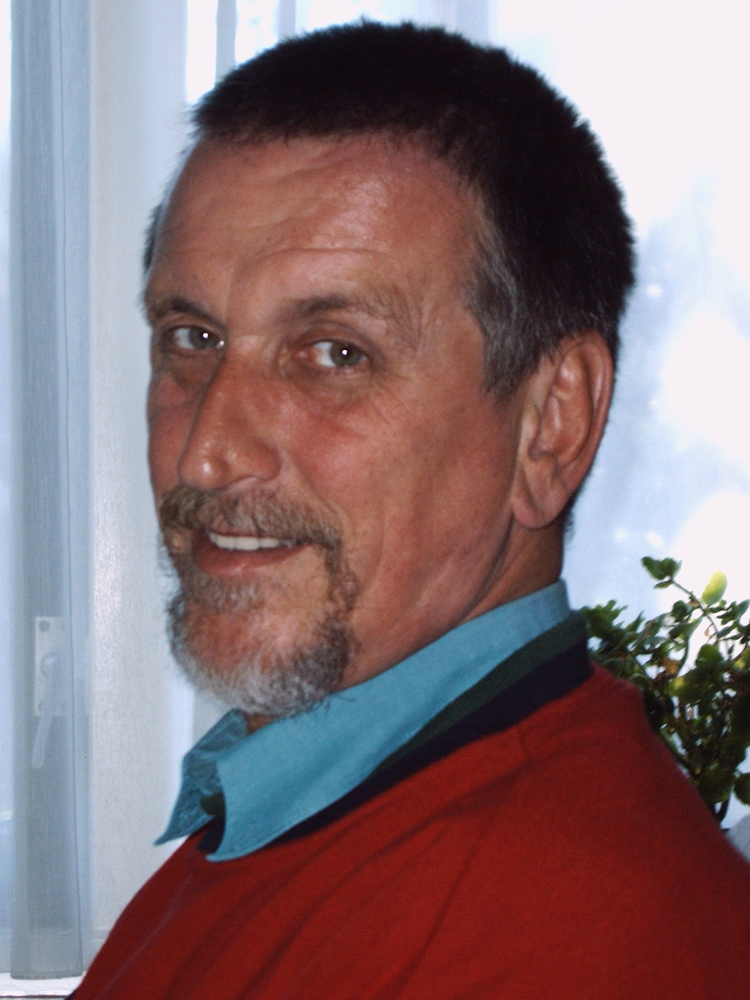

Wieso Max Prantl—für mich?
Eine persönliche Geschichte von Auke van Gemert, Übersetzer der Werke von Max Prantl und Gründer der Max Prantl Foundation.Selbstverständlich ist es sehr sinnvoll, über Max Prantl zu reden und zu schreiben: nicht nur wurde er zu Unrecht der Vergessenheit preisgegeben, er hat aber so viel Wichtiges zu erzählen, dass seine Stimme schon öfters und eindringlicher vernommen werden sollte. Wenn es sich aber darum handelt, die Leute wirklich zu treffen, so komme ich nicht umhin, meine eigenen Beweggründe darzustellen. Etwa wie man endlos über Jesus sprechen könnte (wie es eben in den Kirchen geschieht), während man ohne das 'Pfingstenfeuer' eines Petrus nicht Tausende oder gar nur die wenigsten hätte berühren können. Also: was hat mich alle diese Jahre hindurch getrieben, soviel Zeit und Energie auf einen unbekannten Mystiker mit weltfremden Ideen zu verwenden? Weshalb bin ich ‘verrückt’ genug gewesen, um mich in das zu vertiefen, was ein 'vernünftiger' Mensch kaum haben möchte?
Einmal zurück zum Beginn. Seit ich vor 52 Jahren geboren wurde, bin ich immer ein ‘Gott-Suchender’ gewesen. Dass ich mit dem evangelisch-reformierten Milieu meiner Eltern nicht einverstanden sein konnte, war hinterher nur logisch, gleich wie meine Suche durch mehrere spirituellen’ Gruppen und Kreise. Meine Suche endete aber nie, nie vermochte ich damit aufzuhören. Eine geistige Krise vor 12 Jahren war die Ursache, dass ich mich im Innern von ganzem Herzen für 'Das Leben' entschieden habe. Seitdem bin ich ein ‘Jesus-Anhänger’, inwendig, ohne evangelische, charismatische oder sonstige ekstatischen Äußerungen.
Das Übersetzen von Büchern ist für mich immer ein Weg des Bewußtwerdens gewesen; immer habe ich zu mir selbst gesagt: "Wenn ich diese Sache wirklich verstehen soll, muß ich sie übersetzen - mit anderen Worten: ich muß sie mir zu eigen machen und meine eigenen Worte dafür finden". So habe ich jahrelang Bücher u.a. von dem Mystiker Jakob Lorber übersetzt, bis ich später auf das Werk von Max Prantl stieß. Inzwischen habe ich sein gesamtes Werk übersetzt und veröffentlicht.
Wer das Leben sucht, sucht das wirkliche Leben, die geistige Wirklichkeit bzw. die Wahrheit. Während meiner ganzen Suche hat es sich mir nicht nur immer wieder gezeigt, dass Die Wahrheit irgendwo in der Mitte liegen musste (und deshalb gerade nicht in diesem Klub, dieser Sekte oder Gemeinschaft), sondern auch, dass vieles Wahrheit heißen will, was eigentlich nur Einbildung und Hirngespinst wäre. Sehr viele Leute faseln nur und beten nur ihren eigenen oder fremden Einbildungen nach, wobei es egal ist, ob es sich um kirchlich-religiöse, spirituelle oder New-Age Kreise handelt - oder wie sie sich selbst auch bezeichnen mögen. Was ihnen gemeinsam ist, ist die Überzeugung, die Antworten schon zu kennen, weshalb sie einfach aufgehört haben, die richtige (geistige) Fragen zu stellen. Geistige Sachkunde ist oft in weiter Ferne.
Als ich zum ersten Mal ‘Het stralende hart’ von Max Prantl las (damals auf deutsch, selbstverständlich: ‘Licht aus der Herzmitte’), trafen mich zwei Sachen: einerseits seine aufrichtige und nie aufhörende Suche nach Gott’, andererseits seine eigenen Erlebnisse, durch die er die Wahrheiten, die ich suchte, aus eigener Erfahrung heraus bestätigen konnte. Besonders sein eigenes Erleben der geistigen Wirklichkeit hat mich nicht mehr losgelassen, denn es war genau dasjenige, was allen übrigen Wahrheitspropheten abgeht. Für mich war dies das fehlende Zwischenglied.
Als Jesus-Anhänger habe ich natürlich gleich überprüft, ob seine Aussagen mit denen eines Jesu übereinstimmten, denn solches war für mich der Prüfstein. Inzwischen hatte ich eben gelernt, dass die Bibel (als Auskunfts-Quelle und deshalb auch als Unterlage für die religiöse Grundhaltung) kaum noch zuverlässig geheißen werden darf - wegen der vielen Änderungen, die man in den letzten 2000 Jahren vorgenommen hat: besonders das Neue Testament ist ein Faß voller menschlichen Erfindungen, mit hier und da noch einer Perle. Mein Jesus-Bild hatte sich denn auch stark geändert, aber wunderbarerweise stimmte es immer stärker mit dem überein, was Prantl aussagte. Ein Vergleich hinterher mit Buddha zeigte mir das gleiche: ebenso wie das Christentum ist auch das Buddhismus wäßrig geworden und von späteren Paulussen und sonstigen ‘Verbesserern’ verzerrt worden, jedoch entsprach der ursprüngliche Geist erstaunend genau dem des Prantls und denn auch dem des Jesu.
Hier hätte ich halt machenkönnen: Danke für die neue Erkenntnisse und gehen wir zur Tagesordnung über... So machen es viele Leute, warum ich denn nicht? Aber Max Prantl hat mich nicht losgelassen. Ich habe es als Unrecht empfunden, dass er so stark in die Vergessenheit gedrückt worden war: ich konnte mir den Eindruck nicht verwehren, dass solches absichtlich passiert war. Nachher wuchs diese Überzeugung immer weiter heran, wobei ich immer stärker das Bedürfnis empfand, diese Tatsache wieder zu 'berichtigen'. Seine geistigen Erkenntnisse hielt und halte ich für so wertvoll, dass ich zunächst den Plan fasste, seine Bücher irgendwie zu veröffentlichen, während ich eine Weile später anfing, eine informative Webseite über ihn zu gestalten. Ich wollte eben vollenden, was er nicht mehr vermocht hatte. Dies war eine wichtige, folgenschwere Entscheidung.
Dann kam ich in Kontakt mit seiner Schwester Elisabeth (die noch in Österreich lebt), die mich jahrelang in mancher Hinsicht unterstützt hat. Wir hegen eine ganz eigene Beziehung zueinander. Auch meine Frau und Kinder wurden immer enger beteiligt, ebenso wie einige andere, wodurch sich jetzt eine größere Basis für meine persönliche Begeisterung entwickelte. Heute ist die vorbereitende niederländische Arbeit eigentlich abgerundet: Die Webseite ist da, die Bücher wurden unter eigener Verwaltung herausgegeben, es gibt Postkarten und Broschüren, es gibt eine winzige Gruppe von Interessenten, es wurde eine Stiftung gegründet. In Österreich und Deutschland besteht noch immer Interesse und seit kurzem hat man sich dort bemüht, Prantl’s Werk tatsächlich wieder herauszugeben. Heute ist sein Hauptwerk 'Der Mensch ohne Angst' wieder erhältlich. Eigentlich müsste das Werk zusätzlich auch noch ins Englische übersetzt werden, weil solches eben einen großen Teil der Welt aufschließen würde. Warten wir ab.
Die wahrhafte, tiefe Versenkung in das geistige Leben eines Mystikers, sich ganz und gar in seine geistige Haut versetzen zu wollen ist - im Gegensatz zur Nachfolgung irgendeines Gurus - nicht unverbindlich, man kann es eben nicht für eine Weile machen und dann an den Nagel hängen’. Dies gilt bereits bei einem Jakob Lorber (obwohl alles bei ihm noch stark biblisch, also auf Distanz und deshalb auch nicht sehr lebens-einschneidend ist), vor allem aber bei Max Prantl. Er ist, soviel ich weiß, der einzige, der so eindringlich und logisch eindeutige geistige Anforderungen an die Menschen stellt. Anforderungen, die nicht nur so wie vom Himmel fallen oder jemands Eigennutz dienen, sondern vollkommen dem entsprechen, was von den großen geistigen Gestalten in der Vergangenheit gelehrt wurde. (Dass die Menschheit die Anforderungen und deren Konsequenzen damals und auch heute meist nicht hören möchte, steht auf einem anderen Blatt). Aber die Tonart ist nicht fordernd oder verurteilend (Strafgericht, Jüngster Tag u.ä.), eher einer unentrinnbaren Logik. Es ist einfach so.
Prantl ist es auch, der so scharf die finsteren Kräfte in ihrer aktiven Wirkung an den Pranger stellt, dass ich (zu meinem Glück!) die Existenz eines personifizierten Übels, des 'Teufels', wieder bestätigt fand. Heute darf man eigentlich nicht mehr an einen Teufel glauben, er soll dein 'Schatten' oder 'unbewusste bzw. finstere Seite' o.ä. heißen. Diese handhabt man im Sinne der Selbstbeherrschung und Relativierung. Aber Prantl zeigt, dass es Kräfte gibt, bei denen relativierende Beherrschung keinen Zweck oder Erfolg hat, und die nur gegen das aus dem menschlichen Herz stammende, lebendige Licht empfindlich sind. Damit steigt er über den üblichen Gedankenhorizont hinaus und wir treten in den Bereich der wahren Kraft oder ihres Gegenteils: der Schmarotzer. Und die enthüllendste Tatsache dabei: nicht einmal irgendein Teufel als Drahtzieher erhält die finstere astrale Welt (Luzifer zum Beispiel, dem wir gleich wie Gott an allem die Schuld geben könnten) sondern eher die Menschen selbst (als Mensch auf Erden oder nicht mehr inkarniert).
In jeder Hinsicht legt Prantl die Verantwortung und die Quelle der Unannehmlichkeiten bei den Menschen selbst, während er zugleich der Menschheit ihren richtigen Platz zeigt: einen Platz als 'tierischer' Ego-Mensch (auf Erden) oder 'leibhaftiger Teufel' (in der astralen Welt) für den, der das innere Licht ablehnen will, oder einen Platz als Ewige Sonne, ebenbürtig zu Jesu und anderen (auf Erden und in den lichten Sphären), für den, der die Wahrheit will. Für mich war diese Entdeckung eine wahre Erleichterung, weil damit die Aussagen Jesu Sinn und Gültigkeit bekamen, was wiederum den Weg aufschloß, um die Botschaft Jesu und damit auch seine geistige Wirklichkeit besser zu verstehen.
Eine andere Seite von Prantl, die mich unmittelbar traf, war seine Einstellung dem Leiden gegenüber, und seine Bereitschaft, sich selbst dem zu unterziehen. Für ihn ist es nur selbstverständlich, dass Inneres Licht Widerstand heraufbeschwört, und dass somit aus dem astralen Bereich heraus Angriffe erfolgen müssen. Die Kreuzigung Christi ist ihm eine Notwendigkeit oder Selbstverständlichkeit: In ihrer selbstgewählten Unzulänglichkeit vermögen die Menschen nichts anders als die Lebenskraft zu ermorden. Weil er sich seiner großen geistigen Lebenskraft bewußt war, hat er es sogar fertiggebracht, zu sagen: ‘Lasst die finsteren Mächte mich nur womöglich angreifen, so erleichtere ich damit die schwächeren Seelen und gebe ihnen somit die Gelegenheit, aufzusteigen.’ Eine Opferbereitheit, die wir uns kaum noch vorstellen können, die wir aber eben noch in Jesus wiederfinden, der ja das Leid bzw. die Sünden der Welt getragen hat.’ Seit ich mich mit Prantl befaßt habe, habe ich jeden Tag in meinem Leben die Angriffe vom astralen Bereich heraus bestätigen können, nicht nur als Beeinträchtigung oder Totschweigen, sondern bestimmt auch als wörtliche Mordgier. Offenbar bin auch ich für die finsteren Elemente ‘die Mühe wert’ geworden.
Alles dies entspricht vollkommen dem, was ich in meinem Leben gesucht habe: Eine lebendige Wirklichkeit, lebendige Kraft in einer materiellen und somit beschränkten Umwelt: Gott aktiv! Eigentlich eine unmögliche Kombination, menschlich gesprochen. Es nimmt also kein Wunder, dass 'die Welt' mit ihrem 'realistischen', 'vernünftigen' Verfahren und ihrer ‘bezahlten Liebe’ dafür keine Anerkennung, kein Geld und auch keinen Raum hingibt. Prantl hat es erlebt, Jesus und viele andere haben es erlebt, und auch ich kann es aus eigener Erfahrung heraus völlig bestätigen.
Eine andere Sache - auf die ich zunächst nicht gefaßt war - ist Einsamkeit. Wahres, geistiges Leben macht einsam. Da weithin die meiste Leute ihre eigene auf die Materie ausgerichteten Gedanken für ‘Geist’ halten und somit ihr geistiges Leben damit überschatten oder einfach verneinen, haben sehr viele eigentlich keine blasse Ahnung von dem, wovon Prantl spricht oder wovon ich hier rede. Folglich ist eine Kommunikation auf dieser Ebene schwierig oder gar unmöglich. Es verschlimmert sich noch dadurch, dass wir heute in einer regelrecht ‘gottlosen’ Zeit leben, einer Zeit, in der man mit Gott so wenig mehr rechnet, dass irgendwelche Suche nach höheren Lebensmöglichkeiten faktisch undenkbar geworden ist. Wer nicht emporschaut, der wird ja nie die Sonne schauen.
Alles dies entspricht dem, was Prantl als die 'Scheidung der Geister' kennzeichnet: nicht als ‘Jüngster Tag’ in apokalyptischem Sinne, sondern als eine endgültige geistige Entscheidung der Menschen, die ihre Lebensrealität und somit ihre Zukunft als geistiges Wesen bestimmt. Für mich selbst hat es Mühe gekostet, dies einzusehen (Gott liebt doch alle Menschen und wird sie endlos nachlaufen, so hatte ich es ja gelernt), jedoch konnte ich es mir nie verwehren, die Richtigkeit seiner Sicht anerkennen zu müssen. Die eigene freie Entscheidung, der eigene freie Wille der Menschen soll seinen Platz im Leben haben - wozu eine solche Wahl auch führen mag. Dabei stellt Prantl ein um vieles breiter und tiefgründigeres Bild von der Tragweite des menschlichen freien Willens dar, als mir je zuvor begegnet war - und bietet damit Aussichten Raum, die eine weitgehende Entwicklung zum Licht in sich schließen.
Als Rezept gegen alle (!) geistigen Mißstände gibt Max Prantl eigentlich nur ein einziges Remedium: Stelle deine Angst beiseite, gestatte dir nicht, Angst zu haben. Angst ist die Grundlage für alle Probleme. Dass Angst zugleich die Maske der geistigen Trägheit, des Widerwillens und von aller sonstigen finsteren Egotripperei ist, berührt er zwar, doch geht er nicht unnötig näher auf diese Frage ein. Dagegen solle man lernen, die eigene ‘Innere Sonne’ aufleuchten zu lassen und damit die Finsternis und Angst zu durchleuchten. Diese pragmatische Vorgehensweise hat mich immer maßlos gefesselt: Eine Art spirituelle Nüchternheit, mit der man etwas anfangen kann - ohne die Verschwommenheit oder Beschränktheit, die die sogenannte Spiritualität kennzeichnet und für geistiges Wachstum todbringend ist.
Im Obenstehenden habe ich versucht zu zeigen, was mich überhaupt an Prantl trifft oder getroffen hat. Doch schildere ich eigentlich nur Elemente von Entsprechung, Punkte der Erkennung. Es handelt sich aber um mehr als Erkennung an sich, wesentlich um die Liebe, die ich für ihn gefasst habe. Erkennung an sich könnte - wie meditativ auch - immer noch sterile Anschauung sein; es handelt sich jedoch um Liebe, wenn die Erkennung das Leben betrifft und somit zu einem mystischen Hochzeitsfest, zur Unio Mystica wird. Weisheit ist die Weise, auf der die Liebe sich ausdrückt und gestaltet - diese Ausdrucksformen sind es, die man erkennen kann, während die Liebe sich als eine frohe innere Einheit Geltung verschafft. Bis hier wird jede spirituelle Lehre - und sogar mancher ‘christlich’ denkende Mensch - mir beistimmen können. Prantl sollte aber nicht Prantl heißen, wenn er Obenstehendes nicht mit dem WILLEN erweitert hätte - mit dieser göttlichen Willenskraft, die nichts anders als das wahre Leben will und deshalb veraltete Gebilde zerstört und zu neuen hinführt. Wer sich diesen Willen zu eigen macht, wird wesentlich zu einem Michael, zu einem Kämpfer für Gott, zu einem tatsächlich glühenden Angehörigen der 'Ecclesia militans'.
Auf diese Weise tut Prantl einen Schritt, den die Menschheit im Grunde nicht will, den ich aber habe bejahen wollen: Sich tatsächlich entscheiden für das innerlich Lebendige und es zum Ausdruck bringen. Liebe, Weisheit und Wille: Die göttliche Dreieinigkeit, die das ‘Reich Gottes’, das Reich der Ewigen Sonnen auf Erden zur Realität macht. Dass er auch andere zu diesem Schritt aufruft, ist nur selbstverständlich. Und da dieses ‘himmlische Reich’ auf Erden zutiefst immer mein Lebensziel bildete, war es für mich genau so selbstverständlich, mich dafür in Verbundenheit mit Max Prantl 'von ganzem Herzen, mit meiner ganzen Seele und Vernunft und mit aller Kraft' einzusetzen.
—Auke van Gemert
